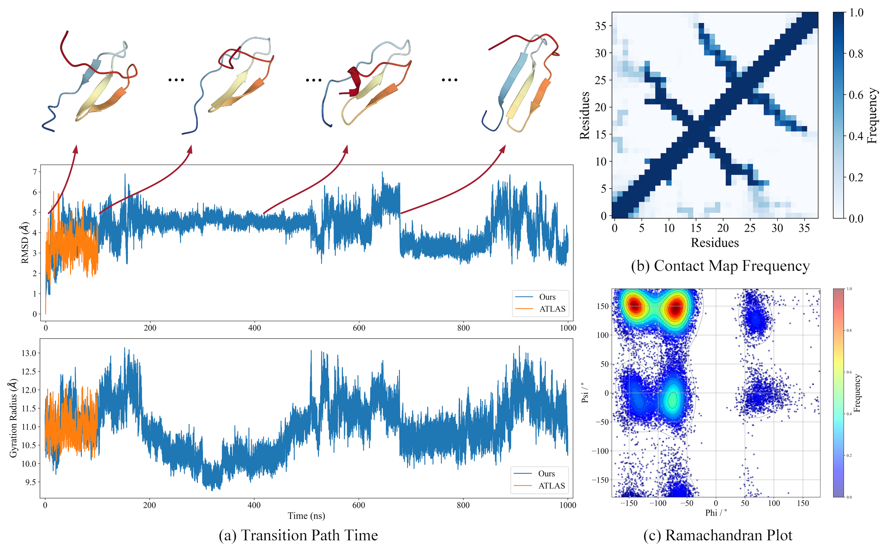

Protein examples from dynamic PDB

The conformational evolution and statistics of protein 3TVJ_I. a) The regions with the most significant changes in the RMSD (Root Mean Square Deviation) and gyration radius curves over time correspond to potential conformational changes. b) The contact map frequency illustrates the changes in interactions between residues within the protein. c) The Ramachandran plot provides insight into the dihedral angles of the protein backbone, indicating the structural validity of the protein conformation.

The conformational evolution and statistics of protein 4UE8_B. a) The regions with the most significant changes in the RMSD (Root Mean Square Deviation) and gyration radius curves over time correspond to potential conformational changes. b) The contact map frequency illustrates the changes in interactions between residues within the protein. c) The Ramachandran plot provides insight into the dihedral angles of the protein backbone, indicating the structural validity of the protein conformation.